Somos estudiantes de psicología de la UDG que buscan difundir información sobre las Necesidades Psicoeducativas Especiales. En México 2 de cada 10 personas presentan alguna dificultad para el aprendizaje.
Contexto LegalIntroducción
Las Necesidades Psicoeducativas Especiales (NPE), o Barreras para el Aprendizaje y la Participación (BAP), no son una característica intrínseca del alumno.
Surgen de la interacción entre el estudiante y su contexto. Un alumno tiene una NPE cuando presenta dificultades mayores que el resto de sus compañeros para acceder a los aprendizajes, requiriendo ajustes razonables o recursos adicionales.
Incluye discapacidad (motriz, intelectual, sensorial), trastornos del desarrollo, aptitudes sobresalientes, o situaciones psicosociales y emocionales.
Nos enfocamos en el potencial de desarrollo y en la salud emocional, no en la etiqueta diagnóstica como limitante.
Conceptos
Pérdida o anormalidad de una estructura o función psicológica, fisiológica o anatómica.
Alteración del desarrollo o funcionamiento en áreas cognitivas, emocionales o conductuales que interfieren con el aprendizaje.
Resultado de la interacción entre las características del individuo y las barreras del entorno, no inherente al individuo.
Galería
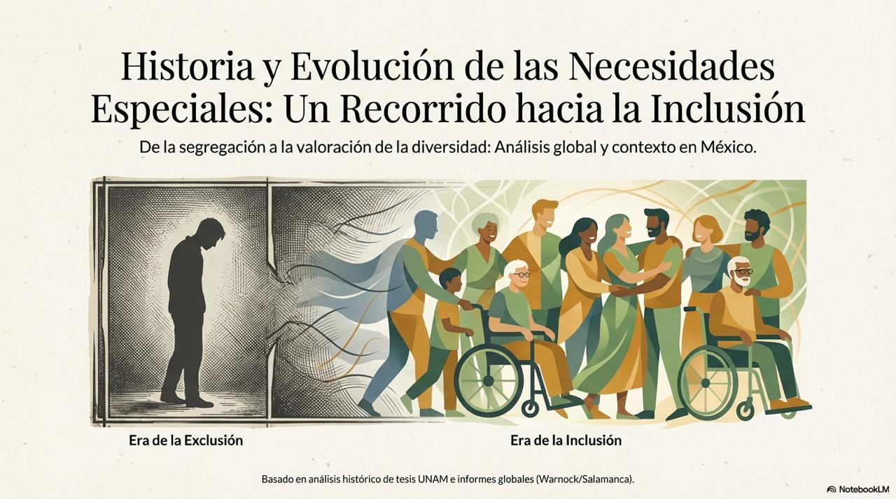
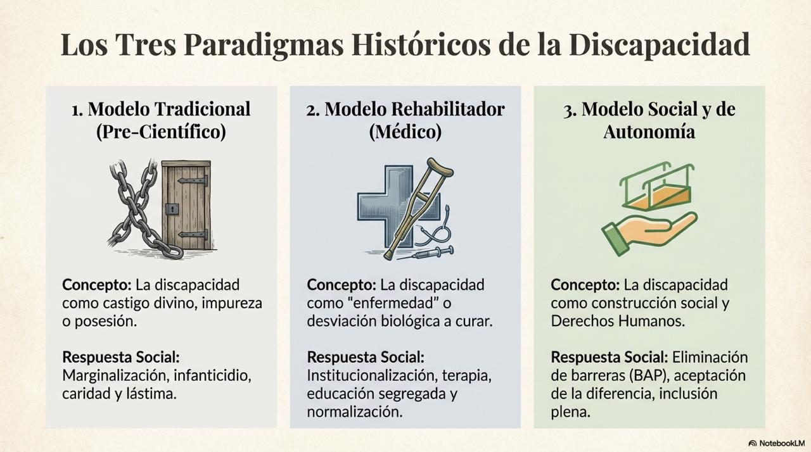
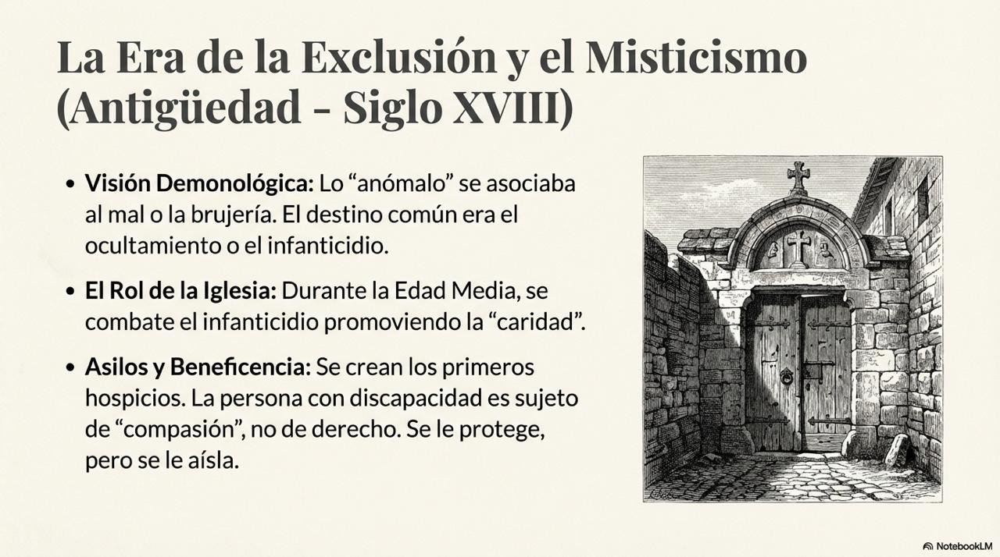
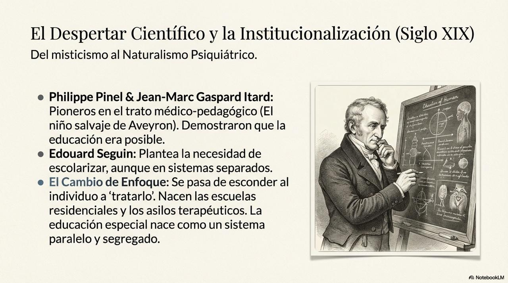
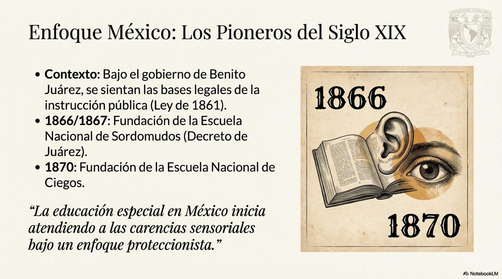
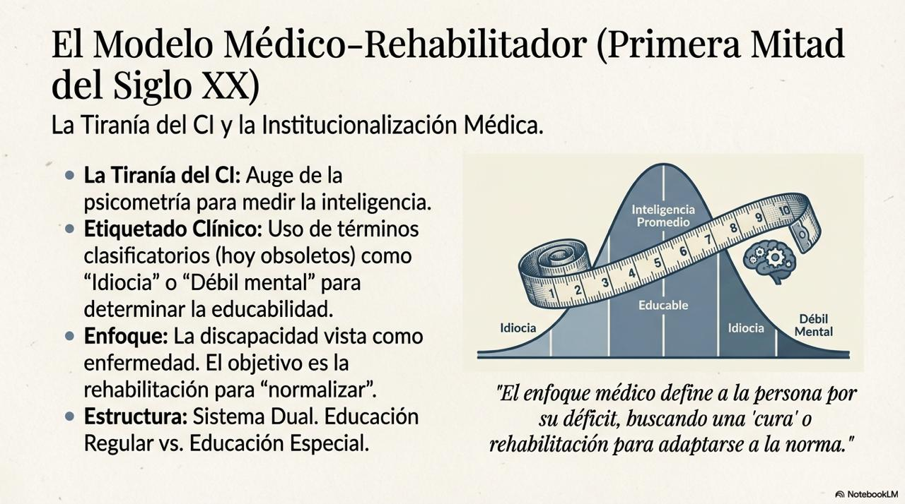
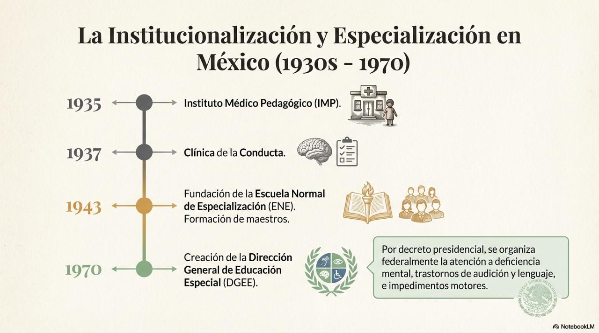
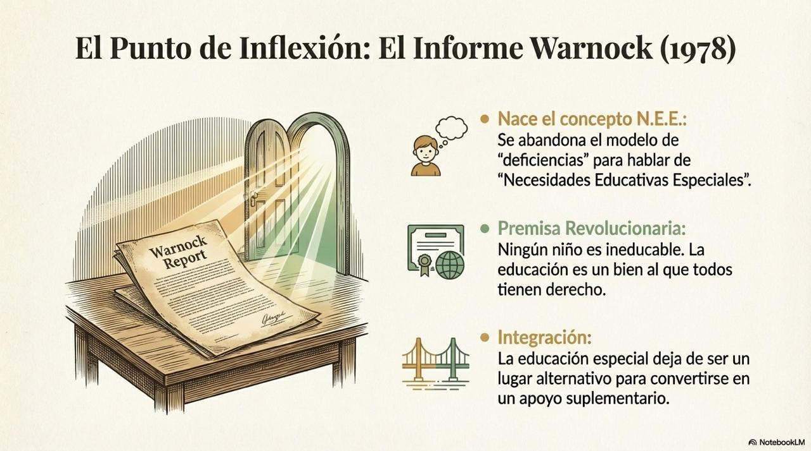
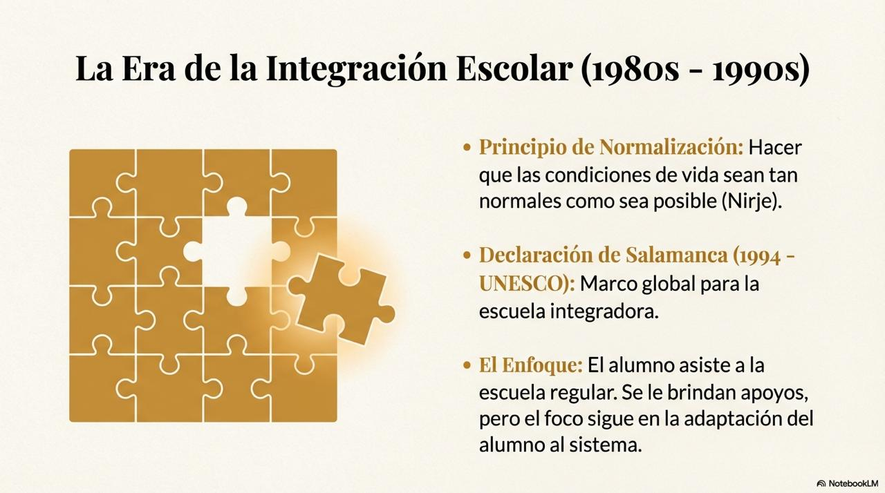
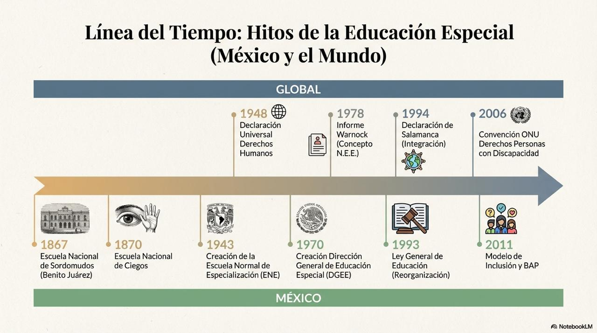
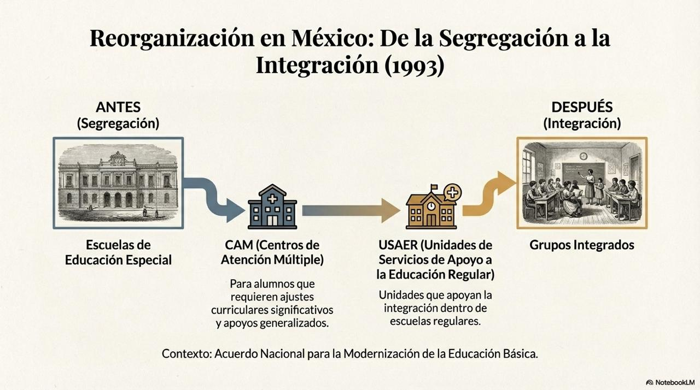
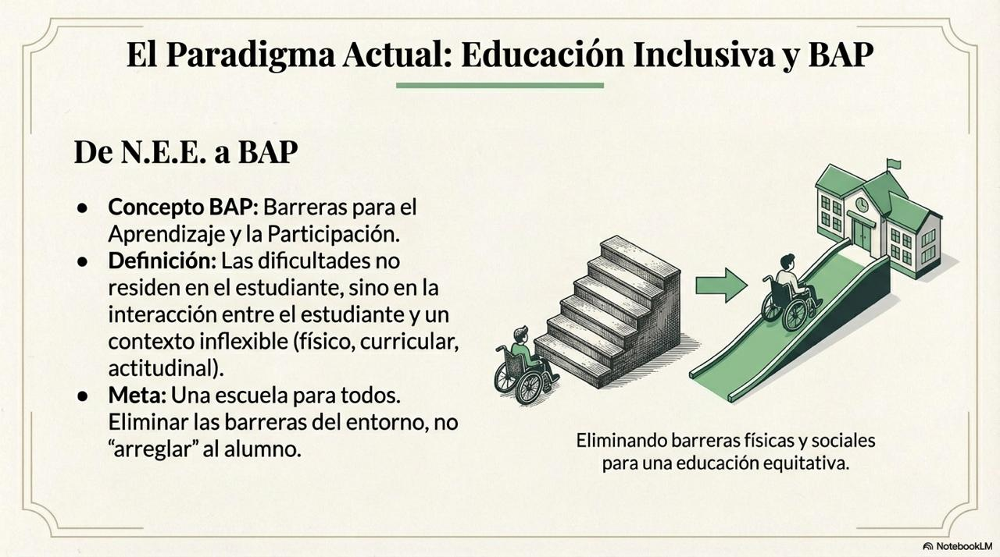
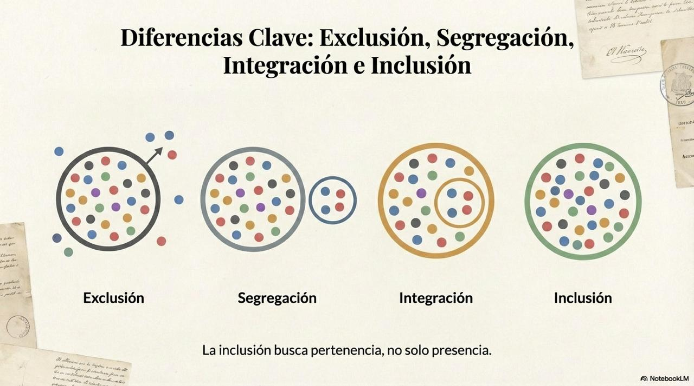
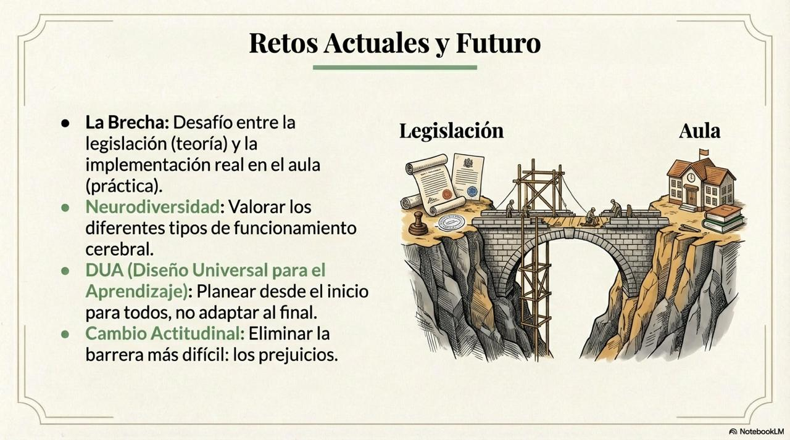
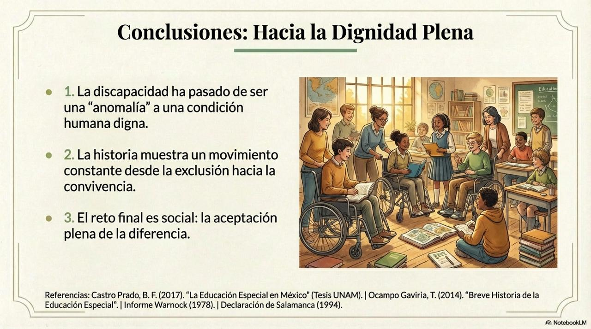
Recursos
Recursos para el desarrollo de altas capacidades intelectuales.
Estrategias para el desarrollo de la inteligencia limítrofe.
Recursos y estrategias para el apoyo con dislexia.
Estrategias para el aprendizaje con vista limitada.
Recomendaciones para apoyar con pérdida auditiva.
Estrategias concretas y apoyo práctico.
Estrategias con enfoque ejecutivo y motivacional.
Regulación emocional y conexión efectiva.
Dificultades de adquisición y expresión del lenguaje.
Estrategias para apoyar a estudiantes con TEA.
Comprensión del patrón de desafío.
Adaptaciones prácticas para coordinación motora.
Contexto Nacional
La educación debe ser inclusiva. El sistema educativo mexicano está obligado a eliminar las barreras para el aprendizaje.
USAER: Apoyo dentro de escuelas regulares.
CAM: Centros de Atención Múltiple.
Reconocimiento de la diversidad como característica inherente a la humanidad.
Construir puentes entre las necesidades del alumno y las metodologías de enseñanza.
Evaluación Psicopedagógica: Identificar fortalezas, estilos de aprendizaje y barreras.
Acompañamiento Emocional: Trabajar autoestima, autoconcepto y habilidades sociales.
Orientación Familiar: Herramientas para el manejo conductual y emocional.